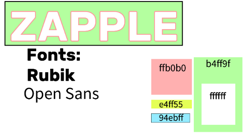

This portfolio of work is completely comprised of projects made in the BIT175 Front End Development course at Cascadia College
The purpose of this design is to provide a home page for the 1st grader game DungeonGems.
This site is to be used by both students and teachers as this is a student aid that follows
the Common Core standards for 1st grade math in the US.
Find the project here
Find the Mood Board here
Background vector created by 0melapics - Freepik.com
All icon assests were the creative property of Mei'lani Eyre.
GreenSock Animation was used to created the gem floating effect, find out more here: http://greensock.com
This project didn't take nearly as long as some of the other website designs we've done, likely because by nature a site geared toward children this young can't be too complex since they're the primary users. I also had a lot of incentive to make this page quickly as I used this page as the homepage for another project in a different class.
I'm easily most proud of the header I made for this site. Graphic design is very hard for me, but I made all of the gems, as well as the other icons and the logos in illustrator, and managed to get the essence of a kids site layout in my site. My main references for this were the sites for Peppa Pig, Barney, Jumpstart, the Capri Sun site, and varying Disney sub-sites.
The purpose of this design is to showcase the many plushies made by the artist
that potential customers could buy, and also the type of art style the creations
would be made in if a customer were to commission a plush. The audience is geeks
who love tangible cute items to show off their geekness.
Find the project here
Find the Mood Board here
All image assests were provided by and are the creative property of Arlo Beegle
Flickity was used to create the carousel, find out more here: https://flickity.metafizzy.co/license.html
This project took a lot more time and effort than I was thinking it would. While I heavily enjoyed the design process, I struggled a lot with bringing those designs to life and ran across some unexpected struggles (Like the color palette being entirely different on mobile devices than on a laptop screen)
Even with those bumps in the road, I'm most proud of the details section I made. Although I didn't have enough time to implement my entire plan (which was to include details for every image), I still feel good about what I created for the demo.